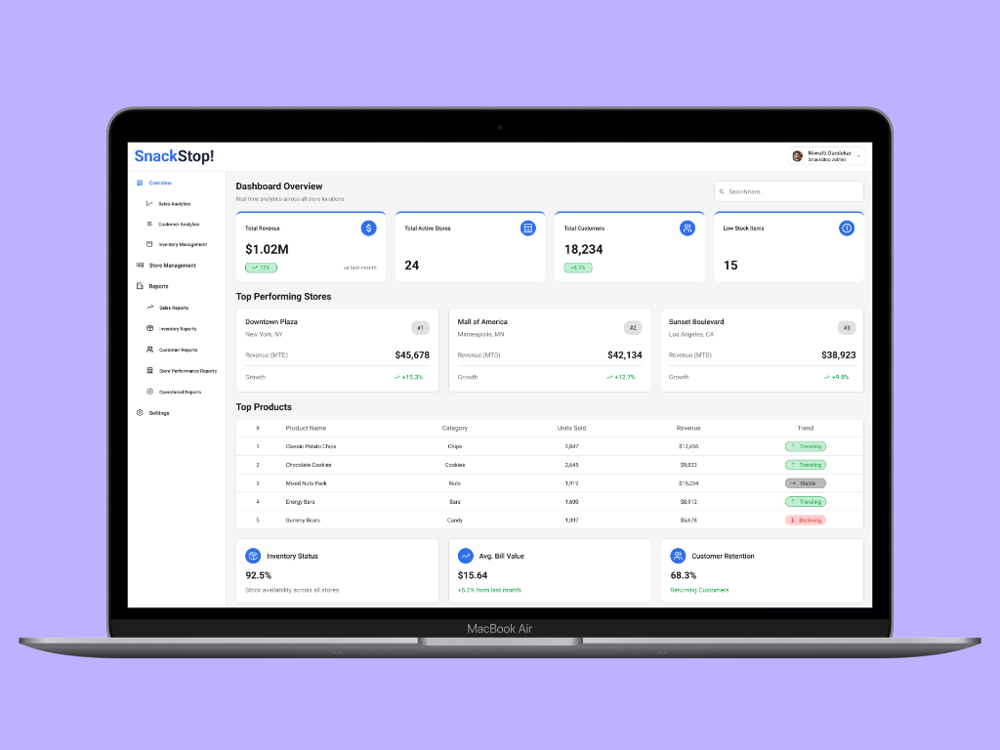
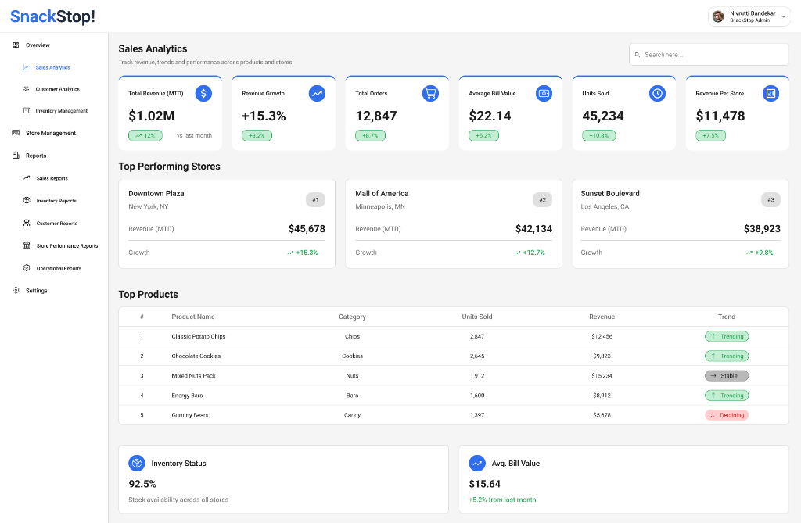
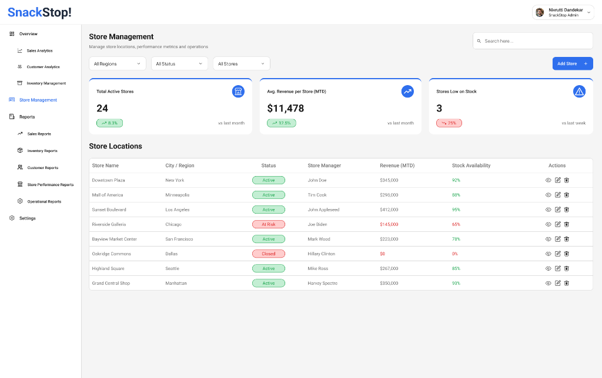
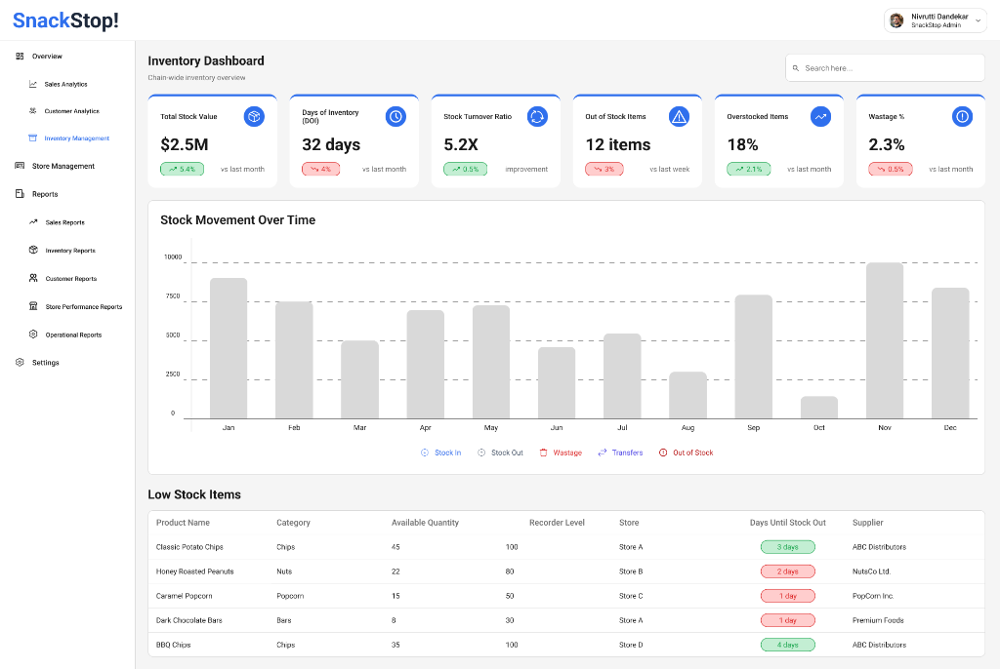

SnackStop ERP Dashboard
SnackStop is a multi-store retail chain that operates several physical outlets. Managing operations across multiple locations required better visibility into sales performance, customer behavior and inventory levels. The business relied on scattered operational data from different stores, making it difficult for managers to track store performance and identify trends in real time. This project explores the UX design of a centralized ERP dashboard system.
Problem Statement
Retail chains generate large amounts of operational data across different stores, but without a centralized analytics system, it becomes difficult to interpret and act on this data. Managers needed a way to track store performance, monitor inventory levels and understand customer purchasing patterns in a single place.
Key Issues Identified
- Sales data was distributed across multiple store systems
- Managers lacked a unified dashboard for store performance
- Inventory tracking required manual monitoring
- Customer analytics were limited and difficult to analyze
Design Goals
Based on the operational challenges identified, the project focused on designing an ERP dashboard that improves visibility into business performance.
- Centralize operational data across all stores
- Provide clear visualization of key business metrics
- Enable store performance comparisons
- Improve visibility into inventory health
- Support data-driven decision-making
UX Audit & Ideation
The analysis revealed that managers relied heavily on manual reports and fragmented data sources. Sales and inventory data were managed separately and performance comparisons required manual analysis. During ideation, the focus was organizing complex data into intuitive analytics modules.
- Modular dashboards for different business functions
- KPI cards for quick performance insights
- Visual charts for sales and inventory trends
- Store comparison tools for performance analysis
Final Design
The final design focuses on creating a clear and data-driven dashboard experience that allows business managers to monitor operations across multiple stores.
- Centralized dashboard displaying key operational metrics
- Clear visualization of sales and store performance
- Improved inventory monitoring
- Structured analytics modules for better navigation




Expected Impact
The proposed dashboard could potentially lead to:
- Improved operational visibility across stores
- Faster identification of sales trends
- Better inventory planning and management
- More efficient data-driven decision-making
Reflections & Learnings
This project helped me explore the challenges for designing dashboards for enterprise analytics systems. Through this process, I gained a deeper understanding of how data visualization and information hierarchy influence decision-making tools.